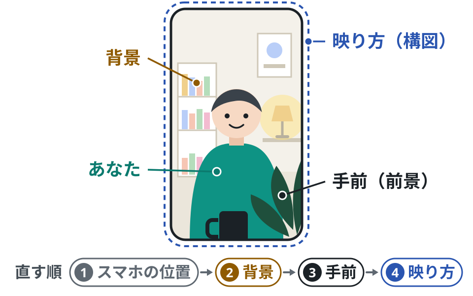
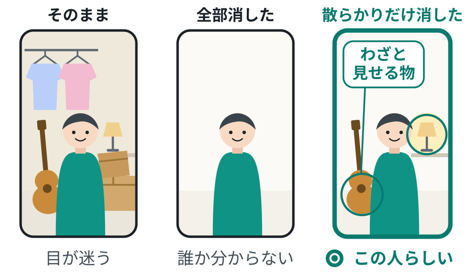
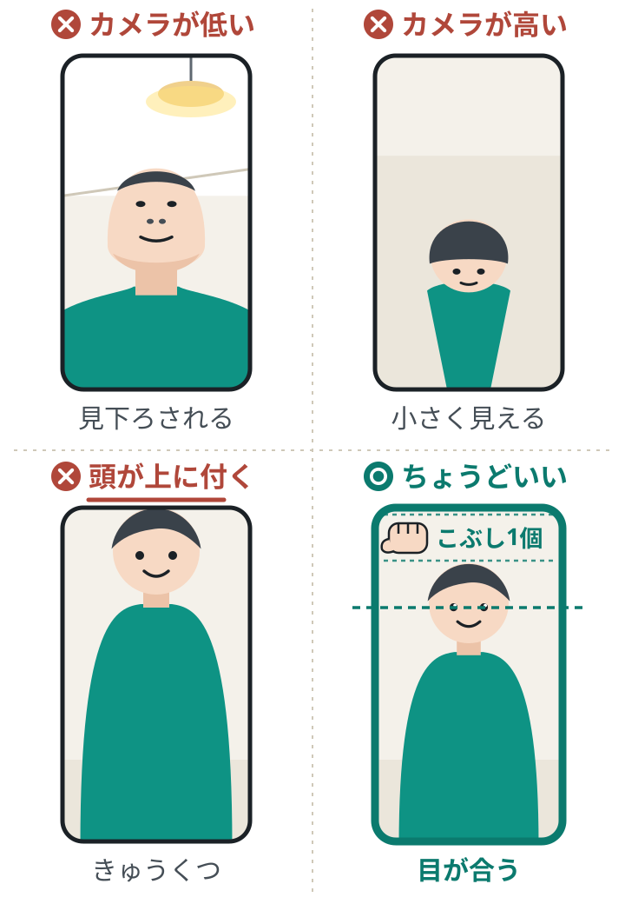

話す前に伝わる配信画面の作り方｜背景・手前・映り方
LIVE に入ってきた人は、あなたが話す前に画面を見ています。今ある部屋とスマホのままで、背景・手前・映り方の 3 か所を整え、「何の配信か」と「居心地のよさ」が一目で伝わる画面にできるようになります。

この記事で学べること
- 画面を「背景・手前・映り方」の 3 つに分けて整える順番
- 先にどける物と、残したほうがいい生活感の見分け方
- 「きれいな画面」を「この人だと覚えてもらえる画面」にする目印の置き方
この記事を終えると
配信を始める前にスクリーンショットを 1 枚撮り、背景・手前・映り方の 3 か所を自分で点検して直せるようになる。
画面は、話す前に届く
結論
LIVE に入ってきた人が最初に受け取るのは、あなたのトークではなく画面全体の雰囲気です。だから、話す練習と同じくらい、画面を整えることが大事です。
なぜ大事？
視聴者は LIVE を次々に見て回っていて、入った瞬間のごく短い時間で「もう少し見るか、次へ行くか」を決めます。そのとき、あなたはまだ挨拶の途中かもしれません。先に届いているのは画面です。
場面
視聴者の側から見ると
夜、ベッドの上で LIVE を次々に見ている人がいます。あなたの配信が画面に出ました。
あなたは別のコメントに返事をしている途中。声は聞こえるが、話の流れはまだ分からない。
目に入るのは、あなたの顔の大きさ、後ろに映っている物、全体の明るさと色。
後ろにギターと楽譜が見える。「音楽の人かな」と思い、指が止まる。
顔がまっすぐこちらを向いている。「話しかけても大丈夫そう」と感じ、もう少し見ることにする。
この人が判断に使ったのは、言葉ではなく画面でした。画面は、あなたの代わりに先に自己紹介をしています。
用語
この記事で使う 3 つの言葉
背景は、あなたの後ろに映る空間。手前は、カメラのレンズとあなたの間の空間で、前景（ぜんけい）とも呼びます。映り方は、カメラに自分の姿をどう収めるか（高さ・位置・余白）のことで、構図とも呼びます。


手を動かす順番
場所とスマホを仮に決める
光が顔の正面から当たる向きに座り、スマホを目の高さに固定
背景
どける → わざと見せる
手前
隅に物を 1 つ
映り方の仕上げ
真ん中・頭の上の余白
窓や明るい明かりを背にする場所は、顔が暗く映るので避けます。先にスマホの高さを決めておくと、あとで映る範囲が変わらず、やり直しがありません。この記事で整えるのは「何がどこに映っているか」までで、顔の明るさ・身だしなみ・加工は次の講座で整えます。
コツ
配信と同じ画面で確かめる方法
TikTok には、公開せずに映りや音を確かめられる練習用の機能が案内されています（名前や場所は変わることがあります）。見つからないときは、スマホの内カメラを縦向きにして確かめます。内カメラは配信の画面と映る範囲が少し違うことがあるので、最初の配信で自分の画面をもう一度見ます。
背景：先に、どける物を決める
結論
背景で最初にやるのは、足すことではなくどけることです。どける物は 2 種類。場所や名前が分かる物と、たまたま映った散らかりです。
必ずどける「映してはいけない物」
注意
俳優・モデル・アーティストなど、活動をしている人へ
台本、稽古や制作の資料、公開前の作品や衣装、ほかの出演者の写真は、背景に映してはいけない物です。また、ポスターや商品のロゴを背景に置いてよいかは、所属先や契約で決まりがある場合があります。分からないときは、置く前に所属先へ確認します。
なぜ大事？
散らかりのほうは、全部消せばよいわけではありません。釣りが好きな人の道具棚、料理をする人のキッチン、絵を描く人の作業机は、その人らしさになる生活感です。消すのは「たまたま映った物」で、「わざと見せる物」は残します。
消す物・残す物の見分け
消す
干してある洗濯物・脱いだ服
配信と関係がなく、目だけ取られる
消す
段ボール・ごみ袋・絡まったコード
「片づけていない」印象だけが残る
残す
使い込んだ楽器・画材・調理道具
「本当にやっている人」だと伝わる
残す
毎日使うマグカップ・お気に入りの本
人柄が伝わり、話のきっかけになる
ここが要点
迷ったときの質問は 1 つ
「これは何？」と聞かれたとき、自分の配信の話につなげて楽しく話せるか。 話せるなら残し、話せないなら画面の外へ動かします。


背景：何の配信かが伝わる物を置く
結論
どけ終わったら、次は見せる物を決めます。背景は、部屋がたまたま映る場所ではなく、あなたの配信の個性を伝える場所です。画面の中で、あなた自身の次に目に入ります。
なぜ大事？
視聴者は背景を見るだけで、配信者の趣味やテーマをつかみます。「自分もそれが好き」と思えると、親しみや共感を持ちやすくなります。話しかけるきっかけにもなります。
| テーマを見せる背景 | 引き算の背景 | |
|---|---|---|
| 合う配信 | 音楽・ゲーム・読書・美容など、テーマがはっきりしている | 表情・リアクション・その場の会話そのものが主役 |
| やること | テーマが直感で伝わる小物を後ろに置く | シンプルな壁やカーテンにし、落ち着いた間接照明を 1 つ置く（顔より暗い明かりにする） |
| 視聴者に起きること | 趣味が分かり、親しみや共感を持ちやすい | 視線が顔と声に集まる |
どちらが上、ということはありません。自分の配信の主役が「テーマ」なのか「会話と表情」なのかで選びます。引き算を選んでも、「この人だ」と分かる物を 1 つは残します。
テーマが直感で伝わる小物の例
音楽
楽器、スタンドマイク、楽譜、好きなアーティストのポスター
ゲーム
フィギュア、色の付いた照明、コントローラー
読書・雑談
本棚、読みかけの本、落ち着いた明かり
美容
鏡、よく使う道具を並べた棚
並べるのは「よく使う物」だけ。全部出すと散らかって見えます
自分ならどうする？
あなたの配信の主役は「テーマ」ですか、「会話と表情」ですか。それが伝わる物を、今の部屋から 2 つ選ぶなら何ですか。
ヒントを見る
買い足さず、今すでに持っていて、ふだん本当に使っている物から選びます。
答えの例を見る
主役は会話と表情（雑談）。壁はそのままにして、いつも点けているオレンジ色のランプと、毎晩使っている青いマグカップを選ぶ。
手前：物を 1 つだけ映す
結論
カメラとあなたの間、画面の手前の隅に、物を少しだけ映り込ませます。それだけで画面に奥行きが生まれます。多くの配信者が見落としている所です。
なぜ大事？
手前に何もないと、画面全体が少し平らに見え、変化のない印象になります。手前・あなた・背景の 3 つの層ができると、視聴者はあなたと同じ空間、同じテーブルに座っているように感じ、臨場感と安心感が生まれます。
やり方
机かテーブルの前に座って配信する場合の手順です。
手前に置く物を 1 つ選ぶ
スタンドマイク、マグカップ、小さな観葉植物など。配信中に実際に使う物、ふだんからそこにある物が自然です。
画面の下の隅に、一部だけ入れる
全体を映そうとせず、端から少しのぞく程度にします。主役はあくまであなたの顔です。
顔や手元を隠していないか確かめる
スクリーンショットで見ます。配信中はコメントなどの表示が画面に重なるので、最初の配信で自分の画面も一度確かめ、隠れるなら反対側の隅へ動かします。
やりがち
- 机の上の物を全部どけて、カメラの前を空にする
- 逆に、飲み物・お菓子・充電器・リモコンが手前に並び、顔より先に机の上が目に入る
こう変える
- 手前の右隅に、いつものマグカップを 1 つ。ふちと取っ手が少し映るだけ
- 話の途中でひと口飲む。画面に動きが出て、同じ机を囲んでいる感じになる
なぜ良い？
手前の役目は、物を見せることではなく奥行きを作ることです。1 つを少しだけ、がちょうどよく、数が増えると「散らかり」に変わります。
コツ
立って配信する人・机がない人は
歌やダンスなど、机の前に座らない配信では、無理に手前の物を作らなくてかまいません。そのぶん、背景と映り方の 2 つを丁寧に整えます。
自分ならどうする？
今の配信場所で、カメラとあなたの間に置けて、配信中に実際に使う物は何ですか。
ヒントを見る
飲み物の入れ物、マイク、メモ帳、植物など。ふだんそこに無い物を無理に置くと、続きません。
映り方：カメラは目の高さに
結論
最後に、最初に仮に決めたスマホの位置を仕上げます。カメラのレンズを目線と同じ高さに合わせ、画面の真ん中に入り、頭の上に握りこぶし 1 個分ほどの余白を残す。 この 3 つです。
なぜ大事？
- カメラが高すぎると、画面の中のあなたが少し小さく見える
- カメラが低すぎると、視聴者を見下ろしているような印象になる
- 真ん中に収まっていると、視聴者の視線がすっと落ち着く
- 頭が画面の上端にくっつく、または天井が映りすぎると、窮屈だったり間のびして見える
やり方
高さは最初に決めてあるので、ここでは確かめて細かく合わせます。
スマホが固定されているか見る
三脚を使います。無ければ、本や箱を重ねた台に立てかけます。手で持つと高さも角度も毎回変わります。
レンズが目の高さにあるか見る
座ったときの目線と、レンズが水平になっているかを見ます。まっすぐ正面で視線が合う高さです。
画面の真ん中に入る
左右どちらかに寄っていないか、体が傾いていないかを見ます。
頭の上の余白を合わせる
頭のてっぺんと画面の上端の間に、握りこぶし 1 個分ほど。スマホの角度と、座る位置の前後で調整します。


| スクショでこう見えたら | こう直す |
|---|---|
| あごの下や天井が目立つ | カメラが低い。本や箱で台を足し、レンズを目の高さへ |
| 頭のてっぺんが目立ち、顔が小さい | カメラが高いか遠い。台を下げ、少し近づく |
| 頭が画面の上端に付いている | 近すぎる。少し下がるか、スマホを少し上へ向ける |
| 上半分が壁や天井だけ | スマホが上向き。まっすぐ立て、余白をこぶし 1 個分まで詰める |
コツ
決まったら、場所に印を付ける
ちょうどよい位置が決まったら、三脚の脚の位置と椅子の位置に、マスキングテープなどで小さな印を付けます。次の配信で、同じ映り方をすぐに再現できます。印は、次の講座で光の向きまで決めてから付けると、やり直しがありません。
同じ物を置き続けて、覚えてもらう
結論
整った画面は入口です。もう一歩進めるなら、毎回同じ場所に、同じ物を 1〜3 個置き続けます。 それが、あなたの配信の目印になります。
なぜ大事？
視聴者はたくさんの LIVE を見ているので、名前までは覚えていないことがよくあります。それでも「あのオレンジのランプの人」という形なら思い出しやすくなります。いつも同じ物が同じ場所にあると、画面を見た瞬間に「前に見た人だ」と気づく手がかりになります。
目印が効いていく流れ
毎回同じ
同じ物が同じ場所にある
見分けが付く
「前に見た画面だ」
結び付く
「このランプ＝この人」
また来るきっかけ
見かけたら指が止まる
これは考え方の整理です。必ずこう進むと約束できるものではありませんが、毎回画面が違う状態では、この流れは始まりません。
やり方
目印にする物の選び方です。
自分のキャラクターと合っている物を選ぶ
落ち着いた雑談をする人なら温かい色の明かり、元気なゲーム配信なら色の付いた照明やフィギュア。画面の印象と、話し始めたときの印象がずれない物にします。明かりを目印にするなら、顔より暗い小さな明かりにします。
長く置き続けられる物にする
借り物、季節の飾り、すぐ飽きそうな物は目印になりません。半年後も同じ場所に置いていそうな物を選びます。
場所を固定する
「ランプは右後ろ」「マグカップは左手前」と決め、動かしません。物が同じでも、場所が毎回違うと覚えてもらいにくくなります。
やりがち
- 飽きられないように、配信のたびに背景も小物も総入れ替えする
- 季節やイベントに合わせて、画面全体をがらっと変える
こう変える
- 右後ろのランプと左手前のマグカップは、いつも同じ
- 変えるのは 1 か所だけ。今日読んでいる本、季節の花 1 輪、今日の企画を書いた小さなボードなど
なぜ良い？
核は固定し、端だけ変える。 変わらない部分があるから「いつもの場所」になり、変わる部分があるから「今日は何だろう」が生まれます。全部を変えると、毎回が初対面になります。
目印が会話のきっかけになる場面
雑談配信を始めて数週間。後ろのランプと、手前の青いマグカップはずっと同じ場所にあります。
はじめて来た人そのランプ、いい色ですね
- 配信者
ありがとうございます。これ、毎晩ここで点けてるんです。この明かりで話すのが落ち着くので
何度か来ている人このオレンジ見ると、帰ってきた感じがする
- 配信者
うれしいです。じゃあ今日も、いつもの明かりでゆっくり話しましょう
ポイント
目印は、はじめての人には話しかける入口になり、何度か来ている人には「いつもの場所」の合図になります。
自分ならどうする？
視聴者に「○○の人」と覚えてもらうなら、○○に入る物は何がいいですか。それは半年後も同じ場所に置けますか。
ヒントを見る
高い物や珍しい物である必要はありません。自分の雰囲気に合っていて、ずっと置ける物が強い目印になります。
初心者からプロへ
まずはここまで
まずは、場所や名前が分かる物と散らかりをどける・カメラを目線の高さに上げる・頭の上にこぶし 1 個分の余白、の 3 つができれば十分です。目印は 1 つ決めて、同じ場所に置き続けます。
慣れてきたら、一段上へ
一段上では、画面を「清潔さ・毎回同じか・自分のキャラクターと合っているか・ほかの人と見分けが付くか」の 4 つで見直します。配信画面の目印を、プロフィール写真や投稿動画の背景にも登場させると、どこで見かけても同じ人だと気づいてもらいやすくなります。
今日覚える 3 つ
どけるのは、場所や名前が分かる物と、たまたま映った散らかり。わざと見せる物は残す。
カメラは目線の高さ。自分は真ん中。頭の上にこぶし 1 個分。
同じ物を、同じ場所に置き続ける。それが「○○の人」の目印になる。
ACTION PLAN
次にやること
光が顔の正面から当たる向き（窓や明るい明かりを背にしない向き）に座り、スマホを縦向きで台に固定して、レンズを目の高さまで上げる。内カメラの画面を出し、スクリーンショットを 1 枚撮る
スクリーンショットを見ながら「スクリーンショット点検シート」の 1〜5 問に答え、どける → 置く → 余白を合わせる、の順に直して、もう 1 枚撮る。最後に、配信を始める直前の画面でも背景・手前・映り方の 3 か所を見る（内カメラと、映る範囲や重なる表示が違うことがあるため）
目印にする物を 1 つ決め、置く場所（例: 右後ろ）を決めて、点検シートの 6 問目に書く。次の配信から、同じ物を同じ場所に置き続ける
TOOLS
使える道具
チェックリスト
配信直前の画面点検
配信を始める直前に、スマホの画面を見ながら上から順に確かめます。
できたらチェック
書いた内容は、このブラウザの中だけに保存されます
ワークシート
スクリーンショット点検シート
配信と同じ場所・同じ向きで撮ったスクリーンショットを 1 枚用意し、はじめて見る人のつもりで 6 問に答えます。答えにくい問いが、直す所です。
自分の顔なら合格。後ろの物や机の上なら、それを動かすか減らす。
ひとことで書く。家族か友人 1 人にも見せて聞き、答えが違ったら相手の答えを採る。
場所や名前が分かる物は必ずどける。残りは「わざと見せている／たまたま映った」に分け、たまたまの物は画面の外へ。
手前が空なら、ふだん使う物を隅に 1 つ。
あごの下や天井が目立つなら低い。頭のてっぺんが目立つなら高い。余白はこぶし 1 個分。
例: オレンジのランプ・右後ろ。「○○の人」と呼ばれるなら○○は何か、で選ぶ。
書いた内容は、このブラウザの中だけに保存されます